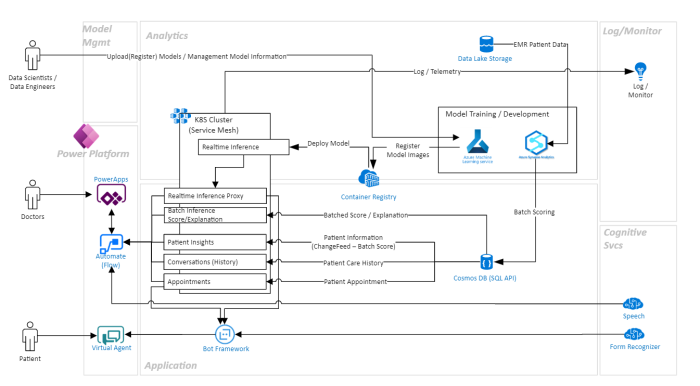

Solution Accelerator
Machine Learning Patient Risk Analyzer Solution Accelerator is an end-to-end (E2E) healthcare app that leverages ML prediction models (e.g., Diabetes Mellitus (DM) patient 30-day re-admission, breast cancer risk, etc.) to demonstrate how these models can provide key insights for both physicians and patients. Patients can easily access their appointment and care history with infused cognitive services through a conversational interface.
In addition to providing new insights for both doctors and patients, the app also provides the Data Scientist/IT Specialist with one-click experiences for registering and deploying a new or existing model to Azure Kubernetes Clusters, and best practices for maintaining these models through Azure MLOps.

Healthcare
HLS
Azure Machine Learning,Cognitive Services,Text-To-Speech,Form Recognizer,PVA,PowerApps,Azure Kubernetes Services,Synapse Analytics